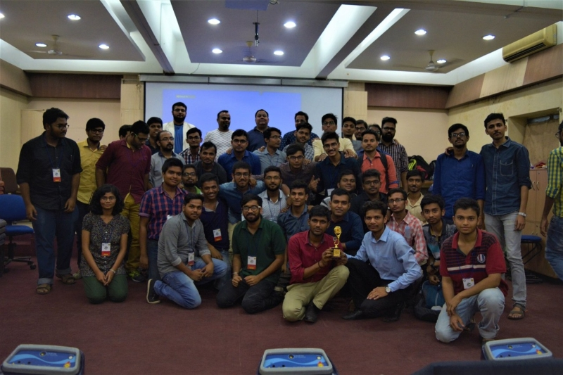

.png)
Achievements

“You never change your life until you step out of your comfort zone; change begins at the end of your comfort zone.” ― Roy T. Bennett
Entrepreneurship is quite like that. Until and unless you overcome the boundary of your comfort zone shrugging off all the fears of failure aside you cannot become a true entrepreneur. There is no easy way to achieve success without hard work, faith and determination. KGEC Entrepreneurship Cell is one of the most active bodies in the Kalyani Government Engineering College. In the short span of three years being an official part of esteemed KGEC the E-Cell has taken many strides with the aim of doing something substantially beneficial for the college and the students. KGEC E-Cell was the brainchild of three of our alumni Mr. Chandan Mukherjee, Mr. Suvadeep Nandi Roy and Mr. Aditya Roy Munka which came into action in the early 2015. In the initial stages E-Cell had to face few setbacks but as the days went by the E-Cell gathered its pace and started working efficiently with the congregated experience. E-Cell first Fresher’s Orientation event Egnition being a huge success gave the solid base they needed to go for the even higher goals. As the goals were getting higher and higher so the amount of responsibilities, to address this E-Cell has organized their first recruitment test. Enthusiastic students of first, second and third years responded spontaneously. From the screening test E-Cell selected the bests to shoulder the responsibilities in various fields.
The major achievement of E-Cell, the first E-Summit was held in the end February of 2016. E-Summit 2016 was a three day event filled with various interactive activities and orations by various speakers. Respected corporate giants likes of Mr. Angshuman Bhattacharya founder of Virtual Infocom, Mr. Arijit Bhattacharya founder & CEO of SIBIA Analytics, Vinay Menon founder of Meratiffin were there to illuminate the stage with their knowledge, experiences and inspirations for students. First E-Summit got incredible not only from the college but from other reputed institutions and organizations. A lot of credit of this big achievement goes to E-Cell’s respected faculty members Dr. Santanu Das Director of KGEC E-Cell, Mr. Supriyo Banerjee Secretary of KGEC E-Cell and Mr. Md. Iqbal Qureshi Treasurer of E-Cell without their support and guidance it was not possible. In the academic sessions of 2016-17 the responsibility of Joint Secretary was shouldered by Mr. Bajrang Saraf and Mr. SK Imran and then in the session 2017-18 the baton was passed on to the next joint secretaries Mr. Somnath Sinha and Mr. Rahul Shaw. Recently in the year of 2020 under the asylum of our present Additional Secretary Mr. Animesh Dutta,Joint Secretaries Mr.Ankan Chattopadhyay and Mr. Bikash Prajapati we have achieved our golden milestone by securing the runner-up position at National Entreprenurship Challenge in the mentoring track hosted by Indian Institute of Technology,Bombay.
During this journey of E-Cell there have been tie ups with many esteemed Institutions like IIT Bombay, NIT Durgapur and Organizations like WiEF (Gurgaon), Mywbut (Kolkata), Talentbattle (Maharashtra), Nexgeno (Mumbai) etc. To develop relevant skills which would be beneficiary for them in their future professional life among students E-Cell organized various workshops and interactive sessions on Digital Marketing, Web Development, Python, and Content Writing etc. with various organizations like Dexterity Gloabals, Mywbut and under government programs. Under Sankalp initiative E-Cell invites alumni to give lectures on various topics every 2 to 3 months. With every passing year the strength and reach of E-Cell is increasing continuously due to the solid base provided by the E-Cell Alumni. At present the total number of E-Cell member is 52 along with one Additional Joint Secretory Mr.Animesh Dutta and two Joint Secretaries are Mr.Ankan Chattopadhyay and Mr.Bikash Prajapati. The objective of the aforementioned individuals is to make KGEC E-Cell the most professional and efficient body of the Kalyani Government Engineering College. The success is a journey and the achievements are the milestones the past three years of KGEC E-Cell is just the beginning of the glorious journey of success.